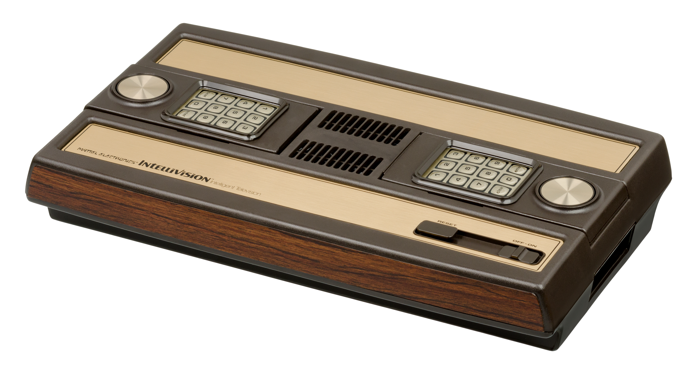

Mattel Intellivision
The console that turned a telephone keypad into a game controller and let a printed paper card redefine every button

Overview
The Intellivision (portmanteau of "intelligent television") is the home video game console released by Mattel Electronics in 1979, after a development project that began as a proposed modular home computer at Mattel's Preliminary Design department. Hardware engineering was led by David Chandler, execution software written by David Rolfe's APh Technological Consulting, and the early games programmed by APh and then in-house by the "Blue Sky Rangers." By 1981 Mattel Electronics had close to 20% of the domestic video-game market, selling more than 3.75 million consoles and 20 million cartridges through 1983; it remained in production until 1990 (from 1984 under INTV Corporation) and was rebadged by GTE Sylvania, Sears (Super Video Arcade), and Radio Shack (Tandyvision One).
Its interaction lives almost entirely in the hand controllers. Each is a two-handed disc with a twelve-button telephone-style keypad flanked by a free-spinning plastic disc, two side buttons, and a thumbwheel. The wandering disc gives smooth continuous analog motion translated into up to sixteen discrete directions, while the keypad supplies gated commands.
Deep dive
The defining interaction is the printed plastic overlay. Every Intellivision cartridge shipped with two overlays that slide down over the keypad and relabel those twelve buttons for that specific game — a sports playbook, a strategy command grid, a set of text keys, whatever the software needs. The hardware buttons never change; the meaning is supplied by the printed card the player physically presses against the membrane. One generic numeric keypad becomes any game's command surface. This is the museum's only "a printed sheet of paper reconfigures a hardware keyboard" interface, a physical ancestor of software-defined touch controls and a cousin to the HP-150 touch template and Sharp Wizard / Casio PB-1000 transparent overlay cards — but as a mass-market game input.
Instead of a conventional 4- or 8-way joystick, the Intellivision uses a smooth disc the player rolls to select directional states (up to 16 depending on the game). Paired with the keypad it gave developers a two-channel physical input — continuous motion plus gated commands — unusual for a 1979 console.
The Intellivision was conceived to "bring data flow into the home." The ambitious Keyboard Component (code-named Blue Whale) that was to add a typewriter keyboard and tape drive for BASIC and videotex was repeatedly delayed and finally cancelled in 1982 after roughly 4,000 units were made — famously prompting an FTC inquiry and the joke that the keyboard, like the check in the mail, was always "coming in spring." The cheaper Entertainment Computer System (ECS, 1983) fulfilled a diluted version of the promise. The console that promised to be a computer instead shipped a paper-overlaid keypad as its interface to software.
The overlay keypad was a genuinely influential idea — a fixed physical keyboard instantly repurposed for any game, a physical ancestor of software-defined UI. The Intellivision also added the Intellivoice speech synthesis module (1982, GI SP0256). IGN ranked it the #14 greatest console of all time (2009); the "closest thing to the real thing" George Plimpton advertisements remain iconic.
Media
